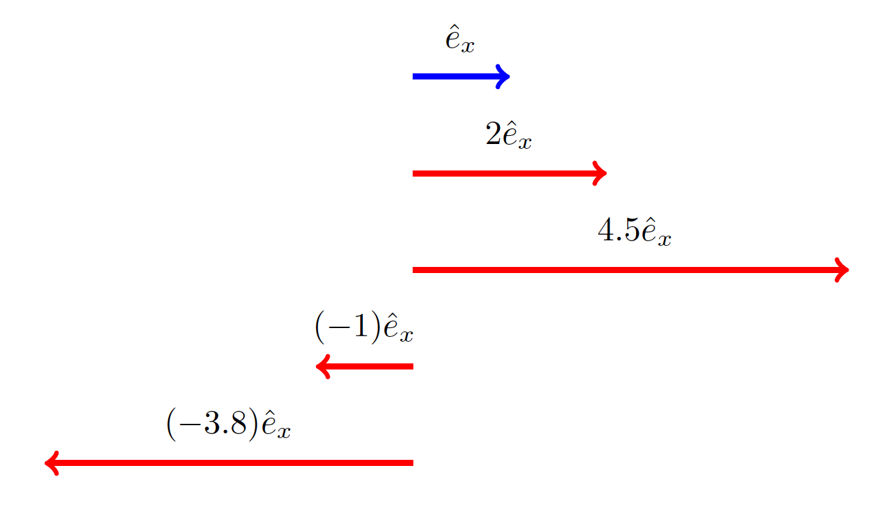

C2.9 Unit Vectors#
C2.9.1 Unit Vector Representation in 1D#
We saw in a previous note that we can scale a vector by multiplying it by a scalar. In mathematical terms, it is very useful to define a vector with a length of 1 unit. We call such a vector for a unit vector. Remember from our conversation about unit conversions how important the number “1” is, in fact, in Linear Algebra, it is required that such a number exists in number space, and similarly, we require that such a vector exists in a vector space.
1D Analytic Representation#
Let us first consider 1D space (say, x-axis and consider a unit vector \(\hat{e}_x\). This unit vector has a length (or magnitude equal to 1) and is directed along the positive x-axis. Hence, we can represent it analytically as
The symbol ^ above the letter is the standard notation for a unit vector and is used to differentiate it from other vectors. From the unit vector, we can create any other vectors directed along (parallel or anti parallel to) the x-axis by applying multiplication by a scalar to the unit vector. For example, a vector \(\vec{A} = [5]\) can be created by multiplying the unit vector by the number 5:
1D Geometrical Representation#
The figure below illustrates how was can create 4 different vectors from the unit vector through geometric representation.
We should by now get the idea that we can obtain any vector aligned with the x-axis simply by multiplying the unit vector \(\hat{e}_x\) by a suitable scalar.
C2.9.2 Scaling#
Any vector in 1D can be written in terms of the unit vector \(\hat{e}_x\) multiplied by a scalar.
The scalar provides the component of a given vector while the unit vector specify a direction with respect to a certain reference frame. In previous notes we wrote the component of vector \(\vec{A}\) as \(A_x\). Hence, we can formally wrote our vector \(\vec{A}\) as
Unit Vector Representation in 2D#
2D Analytic Representation and Scaling#
In a 2D reference frame, we need to add the y-axis as well. In that case, we would define a unit vector \(\hat{e}_y\) and make similar scaling to obtain the desired vectors. We define the two unit vectors as
Any vector \(\vec{A}\) in 2D can be written as a linear combination of scaled version of the unit vectors. Mathematically, we can write that as
or
Hence, we can conclude that
Any vector in 2D can be written in terms of the unit vectors \(\hat{e}_x\) and \(\hat{e}_y\) multiplied by scalars.
Example 1
Consider the vector \(\vec{A} = \begin{bmatrix} 2 \\ 5 \end{bmatrix}\). We identify \(A_x = 2\) and \(A_y = 5\). Hence, we can express the vector in terms of the unit vectors as
or
Write the following vector in terms of the unit vectors \(\hat{e}_x\) and \(\hat{e}_y\): \(\vec{A} = \begin{bmatrix} -1 \\ 4 \\ \end{bmatrix}\)
Let us try and expand it to 3D: Write the following vector in terms of the unit vectors \(\hat{e}_x\), \(\hat{e}_y\), and \(\hat{e}_z\): \(\vec{A} = \begin{bmatrix} -1 \\ 4 \\ -3 \end{bmatrix}\)
2D Geometrical Representation and Scaling#
For the 2D geometrical approach, we will illustrate it through our beloved Python code from previous notes. First, let us just plot the unti vectors so we can visualize how they look like.
The code below is the first code we had in the mentioned notes. I have added a grid for improved visulization by adding ax.grid() to the code. I also added a line in the code to make sure that the aspect ratio between the x- and y-axis is 1. Otherwise, the unit vectors appear to be different sizes since the units are not of the same length along the two axis. This is done by adding ax.set_aspect(‘equal’, adjustable=’box’) to the code. You can try to see what happens if we do not use that line of code (comment it out by putting # in front of that line).
Show code cell source
import numpy as np
import matplotlib.pyplot as plt
%matplotlib inline
def draw(v1, v2):
array = np.array([[0, 0, v1[0], v1[1]],
[0,0, v2[0], v2[1]]])
X, Y, U, V = zip(*array)
plt.figure()
plt.ylabel('y-position')
plt.xlabel('x-position')
ax = plt.gca()
ax.quiver(X, Y, U, V, angles='xy', scale_units='xy',color=['r','r'], scale=1)
ax.set_xlim([-0.5, 5])
ax.set_ylim([-0.5, 5])
ax.grid()
ax.set_aspect('equal', adjustable='box')
plt.draw()
plt.show()
draw([1,0],[0,1])
So far so good. We now have a visulization of these unit vectors: length equal to 1 and directed along the positive x- and y-axes, respectively. Now let us create two vectors: \(\vec{A}_x = [4] = 4\hat{e}_x\) and \(\vec{A}_y = [3] = 3\hat{e}_y\) and plot them together with the unit vectors. You may feel this is familiar: if you completed Boxes 2 and 3 in the notes: Basic Vector Arithmetic: Analytic Approach, then that was a precursor to this. 🤓
For this purpose, I am doing a quick hack of the code to supply four vectors instead of two. Also, I am listing the unit vectors last so they will be plotted on top of the longer vectors.
Show code cell source
import numpy as np
import matplotlib.pyplot as plt
%matplotlib inline
def draw(v1, v2, v3, v4):
array = np.array([[0, 0, v1[0], v1[1]],
[0,0, v2[0], v2[1]],
[0,0, v3[0], v3[1]],
[0,0, v4[0], v4[1]]])
X, Y, U, V = zip(*array)
plt.figure()
plt.ylabel('y-position')
plt.xlabel('x-position')
ax = plt.gca()
ax.quiver(X, Y, U, V, angles='xy', scale_units='xy',color=['b','b','r','r'], scale=1)
ax.set_xlim([-0.5, 5])
ax.set_ylim([-0.5, 5])
ax.grid()
ax.set_aspect('equal', adjustable='box')
plt.draw()
plt.show()
draw([4,0],[0,3],[1,0],[0,1])
If we were to add the two vectors \(\vec{A}_x = [4] = 4\hat{e}_x\) and \(\vec{A}_y = [3] = 3\hat{e}_y\) together, we would get a new vector \(\vec{B} = 4\hat{e}_x + 3\hat{e}_y\). Again, I am going to hack the code: I will move the vector \(\vec{A}_y\) to the tip of vector \(\vec{A}_x\) per rules of vector addition by geometrical means, then I will follow the head-to-tail rule for the resulting vector.
Show code cell source
import numpy as np
import matplotlib.pyplot as plt
%matplotlib inline
def draw(v1, v2, v3, v4):
x_sum = v1[0] + v2[0]
y_sum = v1[1] + v2[1]
array = np.array([[0, 0, v1[0], v1[1]],
[v1[0],0, v2[0], v2[1]],
[0,0, v3[0], v3[1]],
[0,0, v4[0], v4[1]],
[0,0, x_sum, y_sum]])
X, Y, U, V = zip(*array)
plt.figure()
plt.ylabel('y-position')
plt.xlabel('x-position')
ax = plt.gca()
ax.quiver(X, Y, U, V, angles='xy', scale_units='xy',color=['b','b','r','r','g'], scale=1)
ax.set_xlim([-0.5, 5])
ax.set_ylim([-0.5, 5])
ax.grid()
ax.set_aspect('equal', adjustable='box')
plt.draw()
plt.show()
draw([4,0],[0,3],[1,0],[0,1])
We can now see that (geometrically) by scaling the unit vectors, we can create any vector in 2D.
Geometrically create the following vector in terms of the unit vectors \(\hat{e}_x\) and \(\hat{e}_y\): \(\vec{A} = \begin{bmatrix} -1 \\ 4 \\ \end{bmatrix}\)
C2.9.3 Final Notes#
Notation#
The unit vectors are often written as
or as (in most introductory textbooks)
In more abstract mathematics or theoretical physics, we are not limited to 3D and we often use
Basis Vectors#
Since every vector in 1D along the x-direction can be written as a scaled version of \(\hat{e}_x\), we call \(\hat{e}_x\) a basis vector. It is not possible to create a vector along x-direction using the \(\hat{e}_y\) vector or vice versa. This is a consequence of the two basis vectors being perpendicular (or orthogonal) to each other. In Linear Algebra jargon we say that the two basis vectors are linear independent of each other.
Finally, wikipedia has a nice 3D illustration on how to create a 3D vector from the three basis vectors.